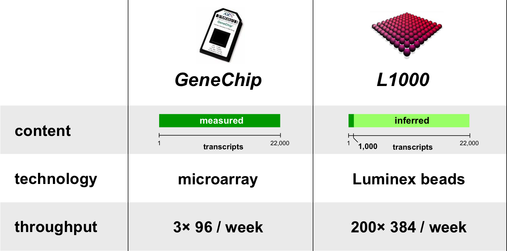
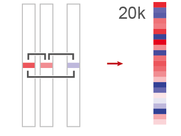
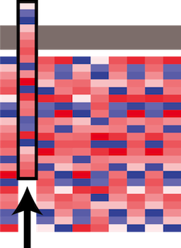

Connectivity Map Data and Tools
Hands On
Corey Flynn
Bioinformatics Scientist II
Connectivity Map,Golub Lab
Cancer Program
Rajiv Narayan
Computational Biologist
Connectivity Map,Golub Lab
Cancer Program
follow these slides at
http://coreyflynn.github.io/SoapBox/CMAP_hands_onLINCS and CMap Overview
LINCS Data Concept

- perturbations scalable to genome
- high information content read-outs (e.g. gene expression)
- inexpensive
- mechanism to query database
GOAL: A look-up table for functional annoation
- Given a gene or protein
- What other proteins have similar cellular effects?
- What compounds impinge upon its activity?
GOAL: A look-up table for functional annoation
- Given a small molecule compound
- What is its mechanism of action?
- What are all of its effects on cells?
- Is it unique?
GOAL: A look-up table for functional annoation
- Given a biological state
- What protein activities relate to that state?
- What compound activities relate to that state?

L1000 expression profiling
LINCS Expansion
Current LINCS CMap Dataset
Data Collection
Scan data
Cell lysates are scanned in 384 well plates in the L1000 assay
Bead deconvolution
1000 gene measurements are decovoluted from 500 bead colors
Normalization
Scale profiles based on expected levels of invariant gene sets and adjust to expected distribution
Inference
Use regression models to impute the rest of the transcriptome
Z-score
Compute Z-scores to determine differential expression
Differential Expression
Average between replicates weighted by agreement
Consensus Gene Signatures
Integrate across knockdown signatures targeting the same gene to generate consensus gene signatures
Data Matrix
Assemble signatures into a unified matrix
Data Resources
Sig Tools
Query Tool
Compare one signature to all other signatures in the database looking for connections
Summly Tool
Summarize the results of a query to focus on the most reliable connections
Introspect Tool
Look for consistency in related signatures
Sig Info

Get metadata for signatures
Sig Slice
Make subsets of the data matrix